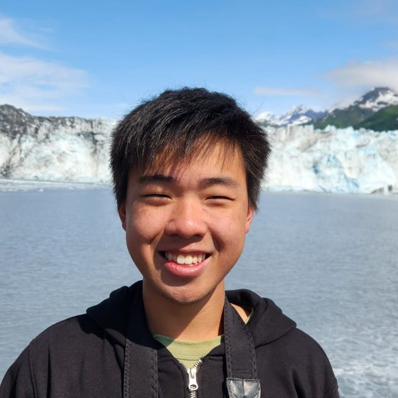

Undergraduate ECE student at the University of Washington passionate about analog
circuit design, mixed-signal systems, and bringing custom silicon to life - from
schematic to layout.
UPWARDS Summer Program at Micron Memory Japan,
Higashi-Hiroshima · July 2026
About

I'm an Electrical and Computer Engineering undergraduate at the University of
Washington (GPA 3.93), targeting a BSMS with a focus on analog IC and
mixed-signal design. My most recent IC work is a 5T-OTA-based CMOS operational
amplifier in Cadence GPDK045 (45nm) on a 1.5 V supply, hitting 25.5 dB
open-loop DC gain, 1.20 GHz GBW, and 1.0 V pp swing at 5.04 mW - sized
from first principles and closed-loop-optimized with ADE Assembler.
This past summer I closed the loop on that work at Hiroshima University's
UPWARDS Summer Intensive Program: I hand-drew a CMOS
layout in Siemens L-Edit, followed it through the fabrication flow at the
Research Institute for Semiconductor Engineering, and then probed and
characterized the finished die myself on a Keysight B1500A. Seeing a transfer
curve come off silicon I had drawn days earlier is what convinced me this is
the work I want to do.
On the systems side, I lead the Husky Robotics drone subteam, where I am
designing a custom STM32H743-based flight controller in Altium from schematic
to PCB and architecting the full drone system for the URC 2026 Delivery
mission. Earlier this year I served as an Electrical Systems Engineer on the
Engineering Horizons Mars Rover team. I enjoy work that spans the full
hardware stack: hand-sized transistors, embedded firmware, and the empirical
tests that close the loop.
Outside of school I'm interested in high-speed PCB layout, signal integrity,
and power-distribution networks - always happy to connect with people
working on analog, mixed-signal, and semiconductor design.
Full-time Hardware Engineering Intern at Trellis Robotics,
reporting directly under the CEO.
In-Pipe Robot PERIPH board: designed and validated a multi-rail peripheral PCB in
KiCad 10 for an In-Pipe inspection robot - dual brushed-DC motor drivers
(DRV8234), TPSM33625 5 V / 12 V bucks, a
TPS7A2033 3.3 V LDO, dual MCP4725 I²C DACs, and a 4S
high-side battery-management front-end (TI BQ76922) with cell
monitoring, Kelvin shunt current sensing, CHG/DSG protection FETs, and a reverse-polarity-protected
charge port.
ESP32-P4 firmware from scratch: wrote the complete robot-side firmware in
C on ESP-IDF (~10k lines) - Wi-Fi station bring-up, an HTTP command
service, a binary TLV telemetry task over UDP, hardware H.264 RTP video streaming,
OTA update, and health/diagnostics endpoints.
Custom peripheral drivers: authored bare-metal I²C drivers for the
DRV8234 motor drivers, BQ76922 battery monitor,
MCP4725 DACs, AS5600 magnetic encoders, and a PCA9546 I²C
multiplexer, with fault handling and watchdog-backed failsafes.
Base-host control stack: built the operator-side Python
application end to end - an async HTTP/SSE API, telemetry decoding and caching, MediaMTX-backed
WebRTC video, a browser dashboard, and an independent IMU bridge - closing the
hardware → firmware → software loop. First-pass bring-up verified
clean within one day of PCB arrival.
Agentic engineering: built custom Claude Code agent skills and
MCP tooling directly into the PCB and software workflow - automated datasheet
analysis, netlist and BOM/stock verification, manufacturability checks, and placement/routing review.
Open-sourced as eda-review and multi-agentic-harness.
Layout & DFM: iterating through full ERC/DRC and JLCPCB manufacturability
sweeps using the kicad-cli and pcbnew Python API - current-aware via sizing
per IPC-2221, adversarial footprint-vs-datasheet audits across every IC, and thermal-pad / via netting
for proper ground and heat paths.
Design-spec deliverable: authored a build-guide-style LaTeX/CircuiTikZ design spec
for the BMS iteration-2 (master switch, XT30 port, charger-detect wake) with a verified BOM and
circuit fragments referenced against the IC datasheets.
Pre-internship prep: built a ROS2 camera-streaming system on a
Raspberry Pi 4 with a custom 2-layer SMD carrier PCB ahead of the start date.
Embedded Systems Researcher
Sensors, Energy, and Automation Laboratory (SEAL)
Jan 2026 – PresentSeattle, WA
Co-investigating a cross-modality study validating PPG-derived heart-rate
variability against synchronous ECG reference across 5 body sites (finger,
forehead, earlobe, shoulder, wrist) and Fitzpatrick skin types; manuscript in preparation for MDPI
Sensors.
Implementing a 13-feature HRV analytics pipeline in Python (NumPy/SciPy): time-domain (SDNN, RMSSD,
pNN50), Lomb-Scargle frequency-domain (LF, HF, LF/HF), Poincaré (SD1, SD2), and sample entropy;
concordance analysis via Lin's CCC and Bland-Altman against ECG.
Built the multi-site acquisition stack: MAX30102 PPG and AD8232
ECG sensors over a TCA9548A I²C multiplexer; designed custom 3D-printed body-sensor mounts in
OpenSCAD and a live FastAPI acquisition dashboard.
Spearheaded recruitment and technical onboarding for the 20+ member Drone subteam; implemented
training pipelines that improved member retention and accelerated project completion timelines.
Leading the full three-PCB program - Flight Controller, ESC, and
Power Distribution Board - directing architecture, BOM selection, technical deliverables, and formal
design reviews across the whole development lifecycle.
Building advanced drones to challenge SUAS and
URC competitions.
Custom Flight Controller PCB: Piloted the design of a custom flight controller in
Altium Designer around an STM32H743VGT6 (LQFP-100, 25 MHz
Abracon crystal) to replace commercial solutions and enable deeper integration with autonomous drone
systems - completed schematic capture and 4-layer PCB layout integrating
BMI270 IMU, MS5611 barometer, INA219 current/power
telemetry, USB-C with TCPP01-M12 PD-sink and ECMF2 ESD filter, microSD via SDMMC, and
6-pin JST-GH redundant power input. Fabricated and flight-proven alongside the ESC
and Power Distribution Board:
Engineered DSHOT600 communication protocol for ESCs driving 750 KV BLDC
motors.
Established MAVLink interfaces between the FC and an NVIDIA Jetson Orin
Nano for computer vision and autonomous navigation, enabling fully autonomous drone
flight.
Designed redundant power-sensing and regulation architectures using multiple ICs to prevent
in-flight failure.
Implemented telemetry collection and broadcasting circuitry with full
PX4-firmware compatibility.
Companion Computer Architecture: Designed and integrated a companion-computer
architecture for a Pixhawk 6C-based drone using a Jetson Orin Nano, enabling computer
vision and autonomous navigation via MAVLink over a redundant 5 GHz long-range
network bridge.
Automated Thrust Stand: Engineered an Arduino-driven thrust stand with
hardware-in-the-loop (HIL) fixtures to characterize motor and propeller performance,
enabling data-driven component selection for optimal propulsion efficiency (25% improvement).
Multi-Platform Integration: Integrated hardware and firmware subsystems across
Pixhawk and SpeedyBee controllers using PX4, Betaflight, and
QGroundControl to establish robust electronic communication protocols.
Serial Communication: Implemented UART, I²C, SPI, and CAN
protocols to interface external peripherals, bridging hardware sensors with firmware logic for
real-time state estimation.
BOM Engineering: Executed comprehensive Bill of Materials selection for 10″
autonomous drones, analyzing datasheets and power-budget requirements for competition-grade
reliability.
HMI & Telemetry: Established Human-Machine Interfaces and telemetry links
between the drone and ground station for seamless real-time command and control during flight
operations.
Electrical Systems Engineer
Engineering Horizons - UW Mars Rover
Jan – Apr 2026Seattle, WA
Piloted the design and assembly of electrical systems for the newest UW Mars Rover, contributing to
power, sensing, and actuation subsystems for a competitive autonomous rover.
Autonomous Systems Engineering Intern
ARIDGE (XPeng AEROHT)
July – Sep 2025Guangzhou, China
Contributed to the autonomous flight and landing stack for the XPeng HT Aero X3 flying
car: trained AI models for aerial object detection and autonomous landing-zone
classification.
Validated the consistency and integrity of LiDAR point cloud and imagery data in a QA stage,
ensuring reliable sensor fusion for downstream perception models.
Communicated technical updates across cross-functional engineering teams.
Projects
5T-OTA-Based CMOS Operational Amplifier
EE 332 Final Project · Cadence Virtuoso · GPDK045 (45nm)
Designed a single-stage 5T OTA in Cadence
Virtuoso (GPDK045 45nm CMOS, 1.5 V supply)
wrapped in a resistive-feedback inverting amplifier (closed-loop gain 4,
2 pF load at 100 MHz). Achieved 25.5 dB DC
open-loop gain (18.9 V/V), 1.20 GHz
gain-bandwidth product, clean 1.0 V peak-to-peak
output swing, and 5.04 mW total power dissipation.
Hand-sized devices from first-principles small-signal analysis with all six
transistors in saturation at Vov > 100 mV,
then closed-loop-optimized via ADE Assembler
multi-objective sizing under all-saturation constraints.
5T-OTA core schematic, annotated sizing and bias.Closed-loop transient, 1.0 V swing at 100 MHz.
Cadence Virtuoso
ADE Assembler
GPDK045
Op-Amp
Analog IC
May 2026
Full-Custom CMOS Inverter: Layout to DRC/LVS Signoff
EE 332 · Cadence Virtuoso Layout XL · FreePDK45 (45nm)
Ran the complete custom IC flow on a CMOS inverter: schematic capture,
Spectre simulation, and full-custom layout in
Virtuoso Layout XL (device placement, metal routing, well and
body contacts). Signed off physical verification in
Siemens Calibre nmDRC/nmLVS with zero violations
across 167 rule checks and a clean LVS match, then analyzed post-layout
RC parasitic impact on propagation delay. Characterized the
voltage transfer curve and 10–90% rise/fall times, and derived the PMOS
sizing needed to center the switching threshold at VDD/2.
Full-custom inverter layout, FreePDK45.Calibre nmDRC/nmLVS signoff, zero violations.
Virtuoso Layout XL
Calibre DRC/LVS
FreePDK45
Parasitic Extraction
Full-Custom Layout
April 2026
Analog Building Blocks: Diff Pairs, Mirrors, and a 5T-OTA TIA
EE 332 CAD Series · Cadence Virtuoso · GPDK045 (45nm)
Designed and simulated the core analog cells in GPDK045:
differential amplifiers with both ideal and NMOS-tail current sources,
current mirrors, and a 5T-OTA transimpedance amplifier for a
photodiode front-end. Extracted device parameters
(Vth, µCox, λ) directly from
Spectre DC operating points, characterized
CMRR degradation under drain-resistance mismatch, and compared
the TIA against a direct-RC front-end on 2 Gb/s PRBS
eye response (159 MHz to 947 MHz bandwidth at
comparable transimpedance). Drove sizing decisions through parametric sweeps in
ADE Explorer.
5T-OTA TIA with photodiode front-end.2 Gb/s PRBS response, bits resolved.
Cadence Virtuoso
GPDK045
Differential Amplifiers
TIA
Mismatch / CMRR
March – June 2026
Adjustable AC-DC Boost Converter
EE 331 Final Project · LTspice · Breadboarded & Validated
Designed, simulated in LTspice, and built on breadboard
an AC-DC converter stepping ±7.5 VAC line input up to a
continuously adjustable +10–20 VDC output.
Topology: 1N4007 full-wave bridge rectifier + 300 µF bulk
filter → 100 mH boost stage switched by a 2N7000 NMOS clocked by
an NE555 astable → MC1458 op-amp / 1N4732 Zener feedback regulator
with potentiometer trim. Achieved 10.4–21.0 V
measured output range, 40–92 mV peak-to-peak
ripple at 1 mA load (within the <100 mV spec), measured
switching frequency 11.3 kHz at 76 % duty, and
load regulation within 0.4 % from open-circuit to
1 mA. Every design specification met on hardware.
LTspice: rectified, boosted, and regulated rails.
LTspice
Boost Converter
Analog Power
Feedback Control
Breadboard
June 2026
Three-Band Active Audio Equalizer
EE 233 Course Project · Op-Amps · LTspice
Designed and constructed a three-band active audio equalizer around the
LM348 op-amp; hand-derived per-band transfer functions
from the active-filter network and validated frequency response against
analytical predictions via full-system LTspice simulation.
Op-Amps
LTspice
Analog Filters
Mar 2026
FPGARhythm
EE 271 Course Project · SystemVerilog · Cyclone V (DE1-SoC)
Implemented a hardware rhythm game in SystemVerilog
(~3,200 lines across 36 modules) on an Intel Cyclone V
(DE1-SoC, 5CSEMA5F31C6): designed a 50 MHz → 25 MHz PLL-derived
640×480/60 Hz VGA timing chain, a 32-bit LFSR
lane sequencer, 4-lane note-spawn FIFO engine, 50 ms debounced input,
a saturating 16-bit scoring unit, and a 48 kHz I²S audio path
through a Wolfson WM8731 CODEC.
System block diagram, single 50 MHz clock domain.Hit-detection FSM, debounce solved in logic.
SystemVerilog
FPGA
VGA
Mar 2026
Trading Intelligence
Python · SQLite · LLM Systems
AI-powered financial intelligence monorepo with two cooperating daemons:
digital-intern ingests from 21 news collectors and scores
~1.8M articles in SQLite (WAL) via a GPU "ArticleNet" model with an
LLM-tiered labeling pipeline; paper-trader runs an Opus
4.7-driven decision engine every 30 minutes. Two Flask dashboards (ports
8080 / 8090), 28 analytics modules, deployed as systemd microservices.
Python
PyTorch
LLMs
Systems
2025 - Present
Job_App - Autonomous Job Application Platform
Python · FastAPI · React · LLM Pipeline
Co-developed (153 commits) a multi-user platform that
ingests your resume, ranks live job postings from a continuously refreshed
local index, and tailors a per-posting resume via Anthropic Claude / local
Ollama. 7-phase pipeline (ingest → discover →
score → tailor → curate → track → report) over 20+
pluggable job-board providers (Greenhouse, Lever, Ashby), real Greenhouse
form submission via Playwright, APScheduler background jobs, Stripe Pro
billing, SQLite + FTS5 storage, React 18 frontend, 487+ pytest tests.
Python
FastAPI
React
LLMs
Playwright
2025 – Present
HKSATabling
Python · Streamlit · Constraint Solver
Web app that auto-generates fair weekly tabling schedules for the Hong Kong
Student Association at UW: 5 days × 4 slots, constraint solver across
member availability, Excel export. Built as a live Streamlit deployment with
135 pytest tests.
Python
Streamlit
Scheduling
2025 – Present
Custom Mechanical Macro Keypad
USB HID Firmware · Custom PCB · Mechanical Design
Designed and fabricated custom mechanical macro keypads from the ground up
with a custom PCB, hand-soldered switches, and USB HID firmware for direct
host integration. End-to-end hardware project: schematic, layout, build,
firmware.
PCB
USB HID
Firmware
Mechanical
2025
Autonomous Line-Following Car
Arduino · PID · Embedded
Arduino-based vehicle with a custom PID controller; held the all-time
fastest record at the UW Line-Following Car Competition.
Arduino
PID
Embedded
Feb 2026
ComplexSolver
C · TI-84 Plus CE · Numerical Linear Algebra
Wrote a TI-84 Plus CE calculator app in C that solves
systems of equations with complex-number coefficients - a niche utility
built to close a gap in existing on-calculator tools for AC-circuit /
phasor analysis. Compiled to native .8xp for direct
installation via TI Connect.
C
TI-84 Plus CE
Numerical Methods
Linear Algebra
Jan 2026
Technical Areas of Interest
Amplifiers
Op-amp and OTA topologies (single-stage, telescopic, folded cascode, two-stage
Miller-compensated), frequency compensation and stability analysis, and low-noise
design with kT/C, 1/f, and thermal noise budgets.
Data conversion & timing
High-speed converters (SAR ADCs, ΣΔ ADCs, current-steering DACs),
clock-and-data recovery, phase-locked loops, and switched-capacitor
discrete-time signal processing.
Photonic & high-speed I/O
Electronic-photonic integration and silicon-photonic interface circuitry
(modulator drivers, transimpedance amplifiers, photodiode front-ends), and
energy-efficient mixed-signal I/O for data-center and AI-accelerator interconnect.
Devices & layout
Nanoscale CMOS device physics, analog layout for matching and parasitic
minimization, and reference and bias generation (bandgap references,
current mirrors).
Bioelectronics
Bioelectronic and neurophotonic interface circuits for biomedical signal chains.
Education
University of Washington
B.S., Electrical and Computer Engineering - GPA 3.93
Seattle, WASep 2024 – June 2028
Honors: IEEE HKN Honor Society Inductee (Iota Upsilon Chapter, Top 8% ECE), Tau Beta Pi
Engineering Honor Society Inductee (Top 12.5%), Lawrence & Lucille Frey Endowed EE Scholarship
(2026–27), Annual Dean's List.
Relevant coursework: Analog IC Design (EE 332),
Microelectronic Circuits (EE 331), Digital Circuit Design (EE 271),
Signals & Systems (EE 241/242), Circuit Theory (EE 215/233),
Energy Systems (EE 351), Control System Analysis (EE 447),
Hardware/Software Interface (CSE 351), Data Structures (CSE 123).
In progress (Fall 2026 – Spring 2027):EE 435/436 Analog IC Design, a full
tapeout project spanning schematic design, full-custom layout,
PVT corner and Monte Carlo verification,
DRC/LVS signoff, and silicon test, plus
Memory Architecture and Advanced VLSI.
UPWARDS Summer Intensive Program 2026 - Hiroshima University
Semiconductor CMOS Practical Training & Industry Immersion (Completed)
Higashi-Hiroshima, JapanJuly 22 – Aug 2, 2026
Selected for the UPWARDS Summer Intensive Program 2026 (University Partnership for
Workforce Advancement and Research & Development in Semiconductors), a U.S.–Japan consortium of
11 universities with Micron Technology and Tokyo Electron. Twelve-day intensive covering custom CMOS
layout design, manufacturing, and final measurement of the fabricated chip at the
Research Institute for Semiconductor Engineering (RISE), with industry engagement.
Attended on approved leave mid-way through the Trellis Robotics internship, then returned to complete it.
Design: laid out NMOS, PMOS, and a CMOS inverter in Siemens L-Edit,
drawing active, poly, contact, and metal layers by hand from first principles; the resulting layouts fed
into the CMOS practical-training fabrication flow.
Process: process and equipment lectures plus cleanroom manufacturing at RISE, spanning
sputtering, photolithography, etching, and annealing, with SEM, AFM, and SIMS
metrology sessions on the tools themselves.
Characterization: probed the finished die on a SENTIO probe station
and swept it on a Keysight B1500A semiconductor device analyzer. Measured
~3.4 mA nMOS saturation drain current at VD = 5 V across a
clean ID–VD family, and a CMOS inverter switching at
~1.5 V on a 3 V supply (essentially VDD/2) with rail-to-rail output.
Industry visits: Micron Memory Japan Higashi-Hiroshima, Renesas Semiconductor
Manufacturing Saijo Factory, and Sumitomo Heavy Industries Material Solutions ion implantation machine
factory; networking sessions with Tokyo Electron and with RISE staff and students.
Delivered a final technical presentation on the design-to-measurement flow, and
completed peace studies at the Hiroshima Peace Memorial Park and Museum.
Program Gallery
Higashi-Hiroshima campus, opening day.Layout design in Siemens L-Edit at RISE.SIMS instrument, RISE equipment lecture.Micron Memory Japan, Higashi-Hiroshima.Renesas Saijo Factory, Ehime.Sumitomo Heavy Industries Material Solutions, ion implanter factory.Radio anechoic chamber, facility tour.Networking with RISE staff and students.Probing the fabricated die, SENTIO probe station.Measured inverter VTC, Keysight B1500A.Certificate presentation, closing ceremony.
Completed hands-on MEMS fabrication laboratory modules and observed semiconductor
fabrication processes at scale, gaining direct exposure to cleanroom workflows and device fabrication
techniques.
Li Po Chun United World College of Hong Kong
International Baccalaureate (IB) Diploma - 42 / 45
Hong Kong2022 – 2024
HL Physics 7, HL Economics 6, SL Math AA 7, SL Chinese B 7. Leader / co-founder of
Philippines Service & Cultural Immersion Project Week; Leader of Tennis QC.
Skills
VLSI
Cadence Virtuoso (Schematic & Layout)
Virtuoso Layout XL
Spectre
ADE Explorer
ADE Assembler
Siemens Calibre (nmDRC / nmLVS)
Full-Custom Layout (Placement & Routing)
Parasitic Extraction
Device Modeling & Parameter Extraction
GPDK045 / FreePDK45 (45nm CMOS)
LTspice
SPICE
Op-Amps
OTAs
Transimpedance Amplifiers
Current Mirrors
Differential Pairs
Device Mismatch & CMRR
gm/ID Sizing
Frequency Compensation
Siemens L-Edit (Layout)
CMOS Process Flow (Litho / Etch / Sputter / Anneal)
Lawrence & Lucille Frey Endowed Electrical Engineering Scholarship - UW ECEMerit scholarship, 2026–2027 academic year · Jul 2026
UPWARDS Summer Intensive Program 2026 - Hiroshima UniversitySelected participant, U.S.–Japan semiconductor consortium with Micron and
Tokyo Electron · Jul–Aug 2026
IEEE HKN Honor Society Inductee - Iota Upsilon Chapter, UWTop 8% ECE · Jan 2026
Tau Beta Pi Engineering Honor Society InducteeTop 12.5% of Class · Jan 2026
Annual Dean's List - University of WashingtonAwarded 2024–25 and 2025–26 academic years
MATLAB Certified - MathWorksJan 2026
Events Officer - IEEE UW Student ChapterIndustry networking events for the ECE student body · Jan 2026 –
Present
Events Officer - Hong Kong Student Association at UWBuilt an automated scheduler for 40+ members; cultural events with 2000+ attendees
· Oct 2025 – Present
UW Line-Following Car CompetitionAll-Time Fastest Record · Feb 2026
Contact
Open to internships and research opportunities in analog, mixed-signal, and
semiconductor design. The fastest way to reach me is email.